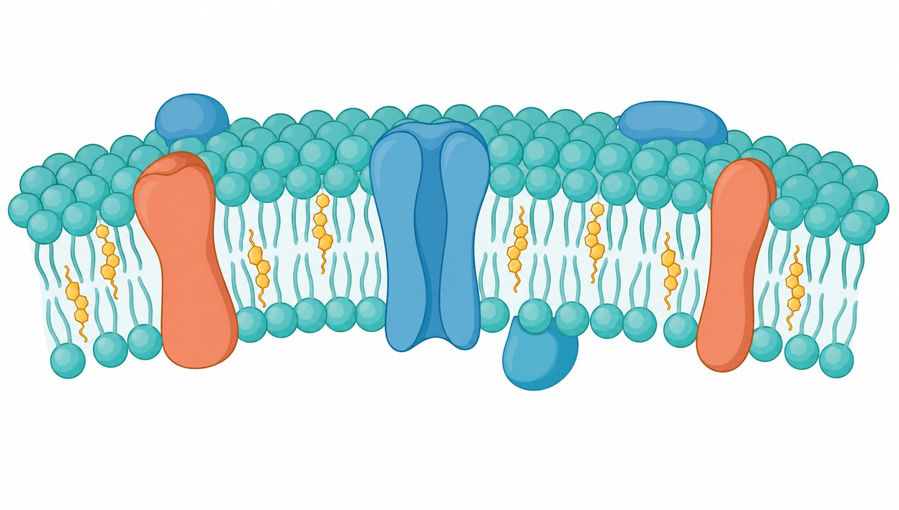

📖 A Cidade Celular
Imagine uma cidade dentro de um milésimo de milímetro: a membrana plasmática é o muro alfandegário, o núcleo é a prefeitura, as mitocôndrias são as usinas de energia e o complexo golgiense é o centro de distribuição.
A célula é a unidade estrutural e funcional dos seres vivos (Teoria Celular). Conhecer suas organelas — e suas funções — é uma das habilidades mais cobradas no ENEM.
🏭 As Organelas e Suas Funções
Cada organela tem um papel específico e coordenado. Memorize a função — não apenas o nome:
| Organela | Função |
|---|---|
| Membrana plasmática | Delimita e controla a entrada/saída de substâncias |
| Núcleo | Contém o DNA; controla as atividades celulares |
| Ribossomos | Síntese de proteínas |
| Retículo endoplasmático | Transporte interno (rugoso: proteínas; liso: lipídios) |
| Complexo golgiense | Empacota, modifica e secreta proteínas |
| Lisossomos | Digestão intracelular ("lixo" da célula) |
| Mitocôndrias | Respiração celular e produção de ATP |
| Peroxissomos | Oxidação de substâncias (ex.: álcool) |
| Centríolos | Formam o fuso e ajudam na divisão celular |
🔬 A Membrana Plasmática e o Transporte
A membrana é um mosaico fluido: uma bicamada de fosfolipídios com proteínas, colesterol e glicídios encaixados. Ela é semipermeável — deixa passar algumas substâncias e bloqueia outras.
- Difusão simples — sem gasto de energia; passagem de O₂ e CO₂.
- Difusão facilitada — com proteínas transportadoras, sem gasto de energia.
- Osmose — passagem de água do meio hipotônico para o hipertônico, sem gasto de energia.
- Transporte ativo — contra o gradiente, com gasto de energia (ex.: bomba de sódio e potássio).

🌱 Célula Vegetal × Célula Animal
As células vegetais têm estruturas que as animais não possuem — e é exatamente isso que a banca cobra.
| Estrutura | Vegetal | Animal |
|---|---|---|
| Parede celular | ✅ Sim | ❌ Não |
| Cloroplastos | ✅ Sim | ❌ Não |
| Vacúolo de grande volume | ✅ Sim | ❌ Não |
| Lisossomos | ✅ Sim (poucos) | ✅ Sim |
| Centríolos | ❌ Não (na maioria) | ✅ Sim |